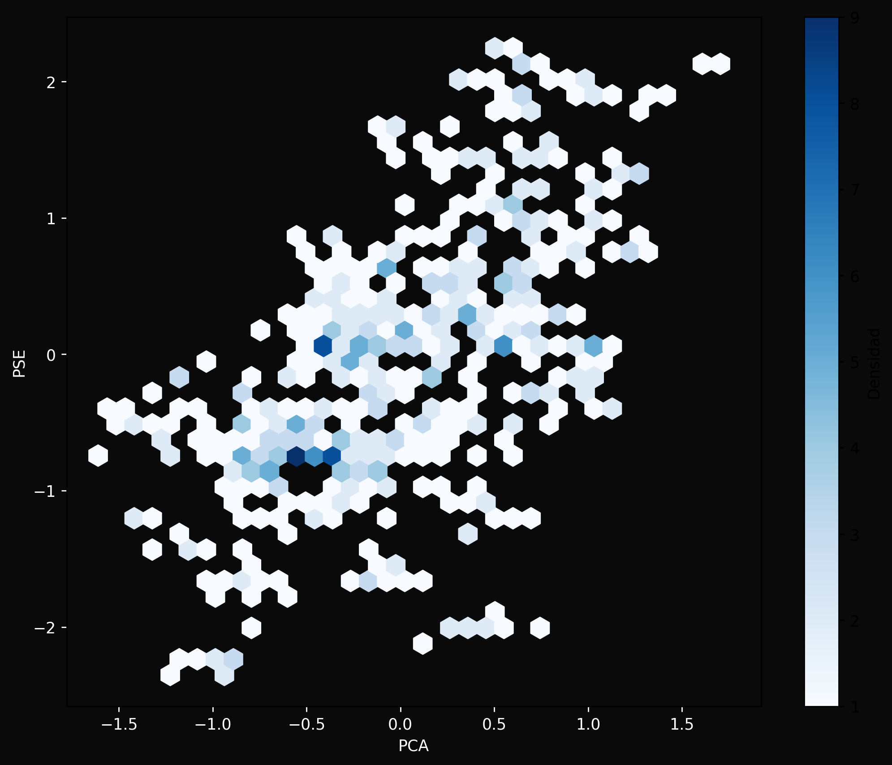
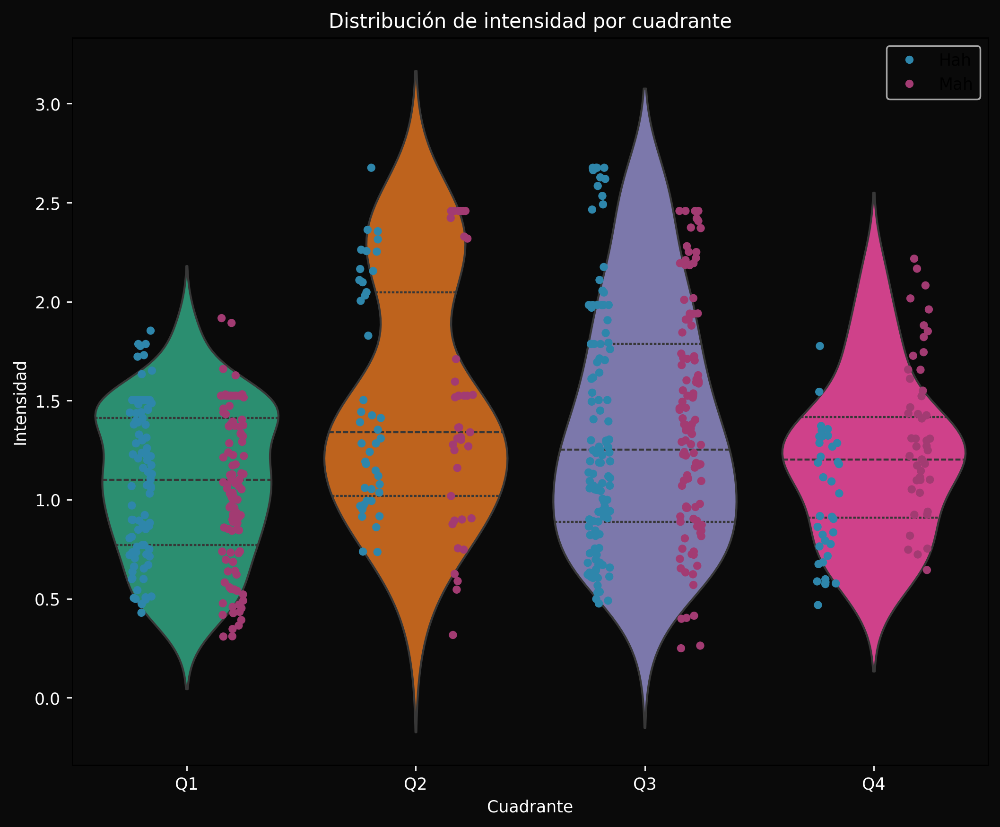
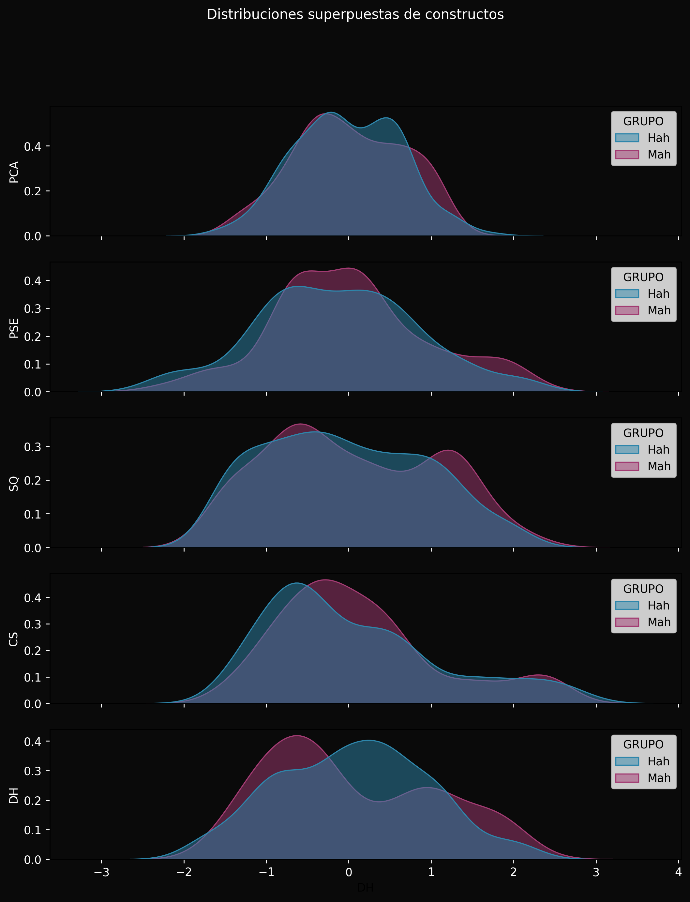
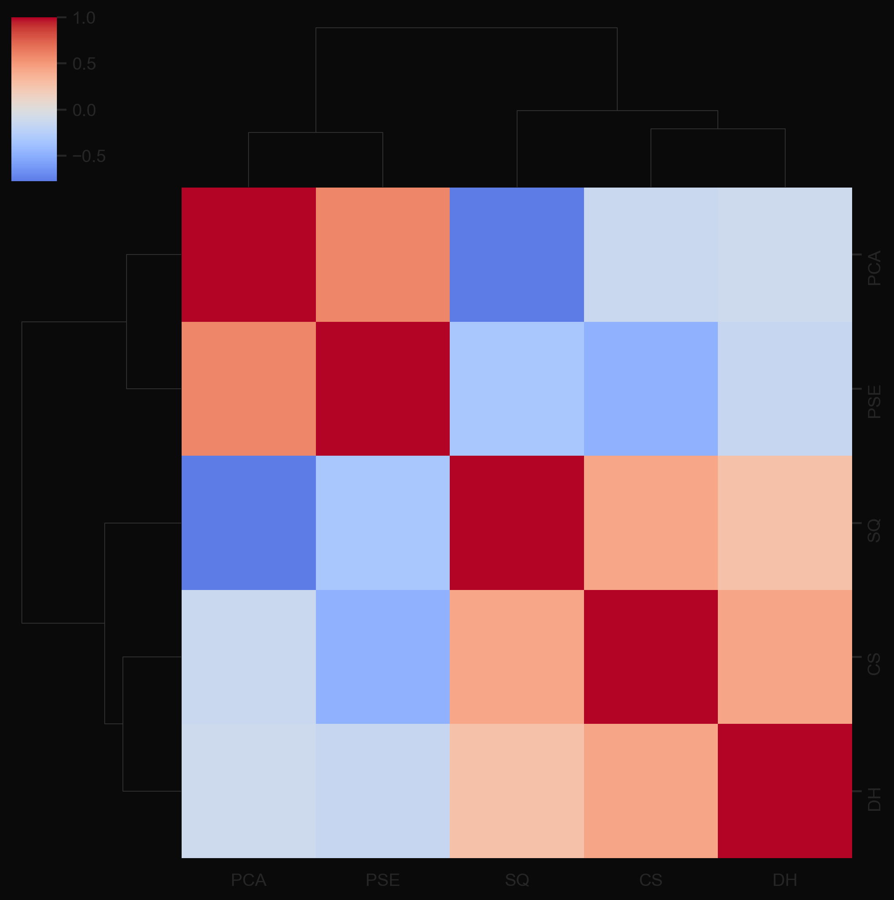
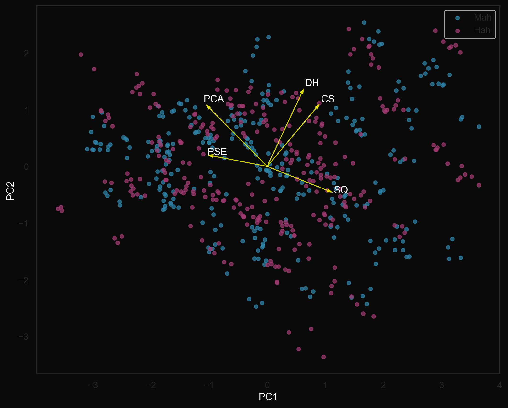
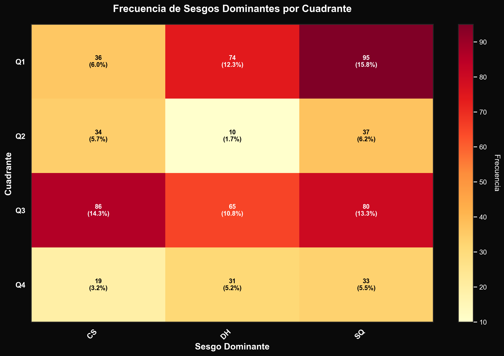
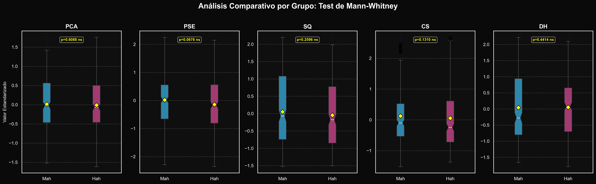

Reporte de Tesis Doctoral
Propensión Conductual al Ahorro y Sesgos Cognitivos
Fecha de generación: 2025-12-11 15:04:37
Total de observaciones: 600
Grupos analizados: Mah (300) / Hah (300)
Constructos: PCA, PSE, SQ, CS, DH
Total de observaciones: 600
Grupos analizados: Mah (300) / Hah (300)
Constructos: PCA, PSE, SQ, CS, DH
📊 Visualizaciones Generadas

4. Hexbin de Densidad
PCA vs PSE

5. Violin + Swarm
Distribución de intensidad por cuadrante



8. Ridgeline
Distribuciones superpuestas

9. Matriz de Correlación
Clustering jerárquico

10. PCA Biplot
Proyección de constructos y observaciones

12. Heatmap Cuadrantes × Sesgos
Frecuencia cruzada

13. Boxplots Comparativos
Prueba de Mann-Whitney por constructo